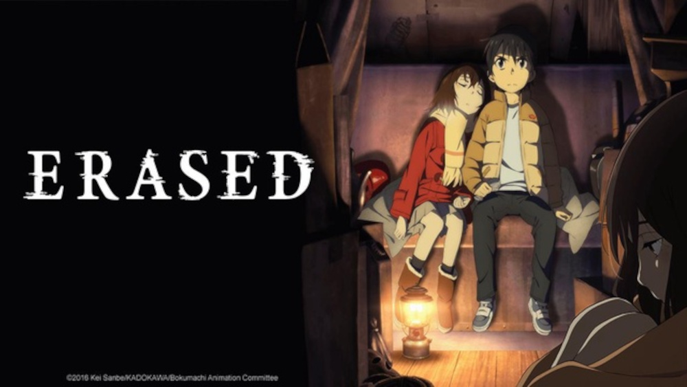
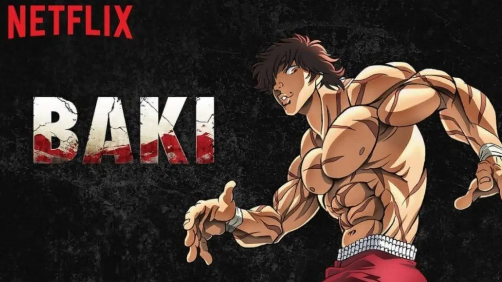
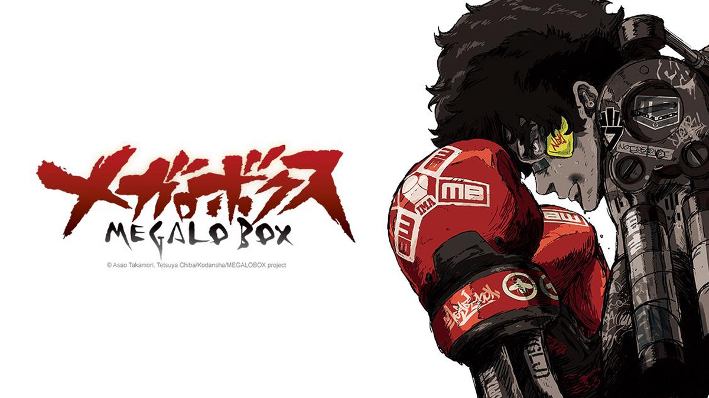
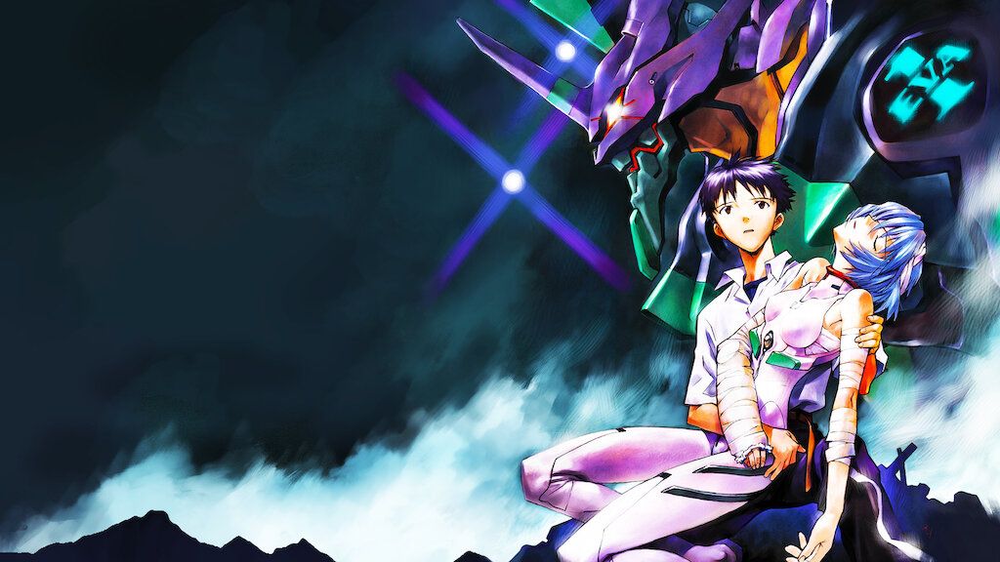
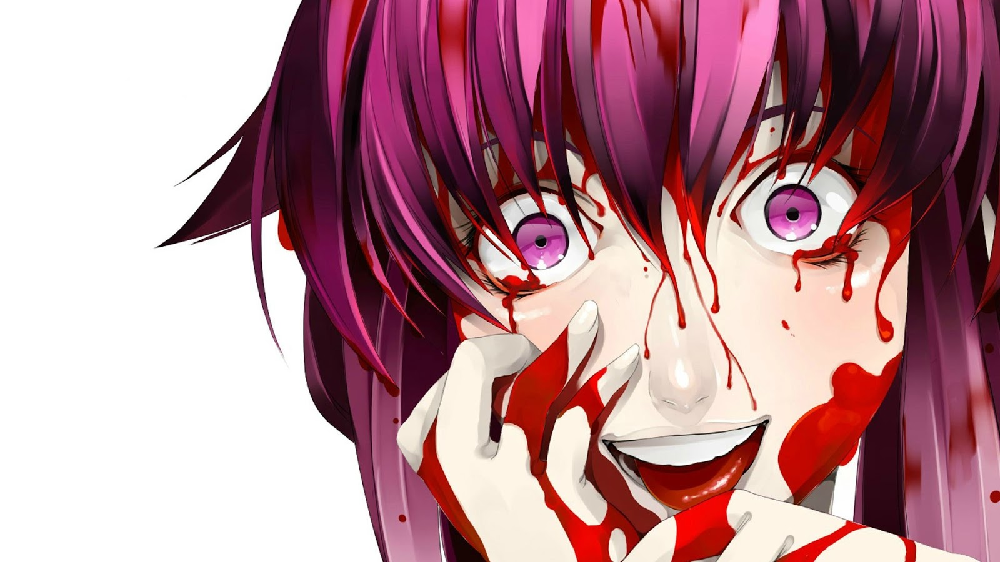
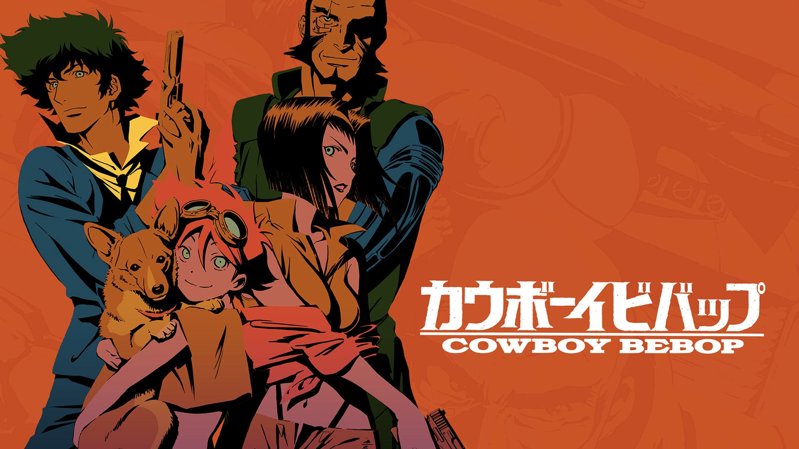
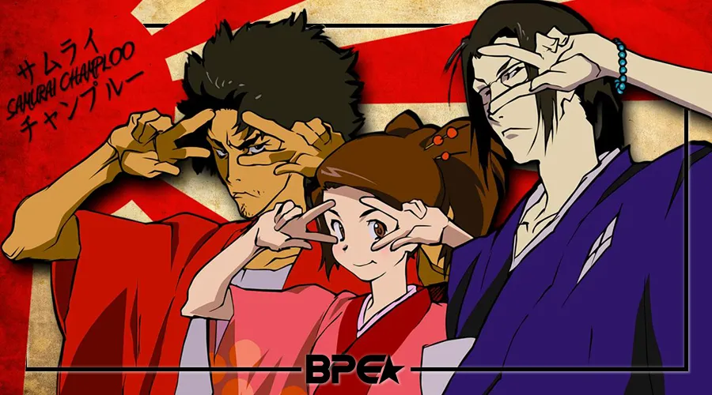
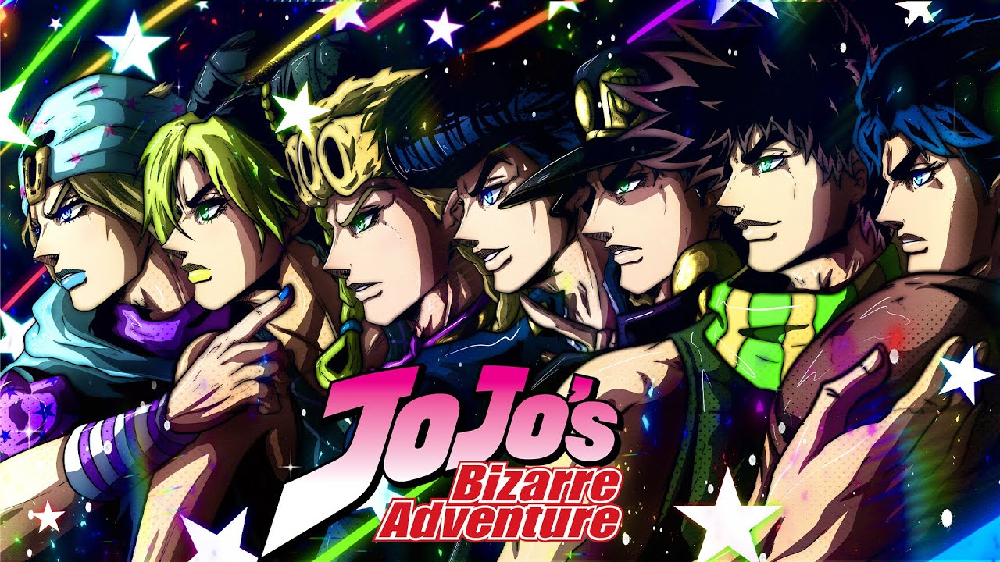

Animes de viagem no tempo
Recentemente assisti um anime bem merdinha de viagem no tempo chamado Tokyo Revengers, podem me xingar, fds. Então separei 2 animes aqui muito bons de viagem no tempo. Segue abaixo.
Erased
Sinopse
Satoru Fujinuma é um jovem-adulto que trabalha fazendo entregas para uma pizzaria e sonha em ser um mangaká, coisa que não vem dando muito certo, porém, ele se esforça muito para concretizar esse desejo. Até esse ponto a vida dele é normal, porém, Satoru tem uma habilidade a qual chama de “revivência” que permite com que volte entre cinco a dez minutos no passado toda vez que algum acidente ou tragédia vai acontecer, permitindo assim que mude os acontecimentos e salve muitas vidas.
Sobre o Anime
Erased é um anime maravilhoso, mesmo tendo temas pesados, como abuso infantil e pedofilia, consegue trazer uma história linda e emocionante. O anime traz uma mensagem bacana sobre ajuda, como nossas assistências e nossa empatia para com o sofrimento dos outros pode salvar vidas. Também, mostra como laços verdadeiros de amizade são fundamentais para que possamos enfrentar nossos medos e obstáculos da vida.
É um anime curtinho com apenas 12 episódios e vale muito a pena assisti-lo. Você pode encontra-lo na Netflix, ou neste site.
Onde Assistir?
O anime se encontra na plataforma da Netflix ou neste Site
Steins;Gate
Sinopse
Steins;Gate é uma obra de ficção científica sobre viagem no tempo. Conta a história de um grupo de amigos que tem um laboratório onde tentam fazer invenções futurísticas, e no meio dessas invenções eles acabam construindo uma máquina do tempo (mas que premissa estranha essa, não é mesmo?).
Sobre o Anime
Steins;Gate simplesmente atende a basicamente todos os requisitos de uma boa história. Embora a ambientação de Steins;Gate pareça um tanto lúgubre, envolta numa paleta meio cinzenta, isso faz parte de toda a atmosfera do anime.
É importante salientar que, se você não conhecia este anime, ele é um tanto quanto complexo e exigirá bastante atenção para que seja possível compreender os eventos que serão passados na trama. Isto porque o anime tem sua trama alicerçada em viagem temporal.
Para pessoas que não estão muito habituadas a acompanharem este tipo de narrativa, pode ser que seja difícil entender ou mesmo achar tudo uma grande chatice. Entretanto, mesmo que seja sua primeira experiência com uma história assim, dê uma chance para Steins;Gate.
Onde Assistir?
O anime se encontra neste Site
Animes de Luta
Baki - O campeão
Sinopse
Baki Hanma é o filho de ninguém menos que Yujiro Hanma, o homem mais forte do mundo. Decidido a conquistar o título do seu pai, esse jovem se submete a intensivos treinos. Mas seu objetivo tem consequências: sua determinação atrai cinco terríveis lutadores dispostos a derrotá-lo de todas as formas. A última esperança de Baki são três guerreiros de artes marciais, Gouki Shibukawa, Retsu Kaioh e Doppo Orochi, que ressurgem para ajudá-lo.
Sobre o Anime
O Anime oferece muita pancadaria e emoções tipicas do estilo “shonen” dos animes. Assistir a esse tipo de anime pode gerar aquela energização de êxtase nas lutas. Descarregos de golpes explosivamente fortes que geram uma sensação de impacto únicas. Lutas viscerais que você normalmente encontra em títulos como Hajime no Ippo, Naruto, Dragon Ball, entre outros.
Para quem devemos recomendar Baki? A todos que buscam um anime exagerado, com muita porrada, sem se preocupar em tramas mirabolantes e bem elaboradas. Baki não tem vergonha de ser ridículo e estereotipado. Justamente por isso é um anime tão bom e divertido. O final da temporada deixa muito claro que a história continuará. Enquanto não sair, busque as temporadas antigas, vale a pena conhecer, são tão ridículas e maravilhosas quanto.
Onde Assistir?
O anime se encontra na plataforma da Netflix ou neste Site
Megalobox
Sinopse
Joe, um lutador do submundo do Megalo Box, uma espécie de boxe em que os competidores utilizam próteses mecânicas para se enfrentar nos ringues, se vê preso a uma vida de lutas combinadas e sem nenhuma perspectiva para o futuro. As coisas mudam quando, em uma noite, Joe se envolve em um acidente com Yuri, campeão mundial da modalidade
Sobre o anime
O roteiro aborda diversos temas atuais como por exemplo o problema que diversos países enfrentam com a imigração ilegal, no anime os imigrantes, são totalmente marginalizados tendo que viver em “favelas” e comunidades muito pobres, que é exatamente o caso do nosso protagonista, outro aspecto que o anime aborda é o amor que nosso protagonista tem pela luta, durante suas lutas no submundo eventualmente ele precisa entregar resultados e conseguimos sentir como isso machuca profundamente o personagem em cada resultado arranjado, ele claramente odeia aquela situação. Os personagens secundários também cumprem bem seu dever cada um com um passado muito bem explicado e que ajudam bastante no desenvolvimento da história.
Onde Assistir?
O anime se encontra na plataforma da Netflix ou neste Site
Animes de Suspense/Drama psicológico
Neon Genesis Evangelion
Sinopse
Em um mundo pós-apocalíptico, uma organização paramilitar chamada NERV é criada para combater monstros chamados Anjos, utilizando seres gigantes chamados Unidades Evangelion (ou EVAs). Estes seres são controlados por adolescentes, recrutados pelo ano em que nasceram, quando ocorreu o Segundo Impacto. Com outros jovens que foram treinados para pilotar os EVAs e com a ajuda dos membros da NERV, eles tentam derrotar os Anjos e evitar o Terceiro Impacto, que levaria a destruição da humanidade.
Sobre o Anime
Neon Genesis Evangelion é, acima de tudo, uma obra humanista; teologicamente e psicologicamente confrontadora, colocando em xeque a existência e ambição humana, sempre procurando o micro dentro do macro para sua experiência reflexiva em contextos intrínsecos.
Os personagens são complexos e maravilhosamente desenvolvidos ao longo dos episódios, de forma que você acaba se importando com praticamente todos eles. E a ação é de prender o fôlego, graças a uma das melhores animações de seu tempo… Tão boa, aliás, que seu orçamento e os prazos para sua conclusão aparentemente acabaram antes que a série estivesse completa, e os últimos dois episódios foram feitos na base da gambiarra, mergulhando na psique instável de Shinji através de uma das animações mais abstratas já vistas na televisão – mas não pense que por isso você não irá chorar ou pensar sobre a vida.
O resultado é uma das grandes obras-primas dos animes, artística sem deixar de ser divertida, psicológica sem deixar isso entrar no caminho do enredo, não necessariamente perfeita, mas acima de tudo, única como série, como animação e como experiência.
Onde Assistir?
O anime se encontra na plataforma da Netflix ou neste Site
Mirai Nikki
Sinopse
Amano Yukiteru é um menino um tanto estranho. Ele vive no próprio mundo, fechado, sem amigos. Como hobby ele escreve um diário. É um diário diferente do que normalmente conhecemos. Primeiro, ele é escrito no celular de Amano, segundo ele escreve tudo nele, tudo o que acontece ao seu redor. Dentro da sua cabeça ele tem um mundo que contém um deus do espaço/tempo e esse lhe promete transformar seu diário em um Diário do Futuro. E assim acontece. Amano então percebe que o mundo em sua cabeça não é imaginação e fica fascinado com a sua nova habilidade. Porém ele não é o único a obtê-la. Acontece que tudo é um jogo com doze participantes. Quem vencer se transforma no novo deus. Quem perder… morre.
Sobre o Anime
Se existe um anime interessante, complexo e com um conteúdo ligeiramente pesado para certas idades, esse é Mirai Nikki (未来日記). É um shonen escrito e ilustrado por Sakae Esuno
A história de Mirai Nikki gira em torno de Amano Yukiteru, um garoto peculiar e tachado como estranho. Como tal, a dificuldade em ter amigos era eminente, o que automaticamente o faz ter certa repulsa da sociedade, o que o torna um mero espectador desse grande reality show que é a vida cotidiana. Então, toda essa sua frustação e insatisfação ele registra no celular, fazendo deste o seu diário. Entretanto, o mais curioso disso é que ele não só “desconta” tudo nesse registro diário em seu celular, como também imagina um Deus dominador do tempo e espaço, o que acaba, de fato, acontecendo: Yukiteru ganha, inesperadamente, o poder de prever o futuro com seu celular, sendo assim denominado o “Primeiro”, ou seja, o precedente do poder do denominado “diário do futuro”, o Mirai Nikki.
Onde Assistir?
O anime se encontra neste Site
Animes de Ação/Drama/Suspense
Cowboy Bebop
Sinopse
Cowboy Bebop é ambientado em um futuro distante sendo o ano de 2071, onde o Sistema Solar é afetado por um acidente que tornou a Terra quase que inabitável. Fazendo com que os humanos passem a ocupar novos planetas, sendo que é fácil viajar pelo espaço, e com isso a criminalidade chegou a um nível extremo. Para diminuir essa criminalidade, passou a se adotar à regra do velho oeste, onde se oferecia um preço pela cabeça de cada bandido e os caçadores de recompensa, Cowboys, tentando capturá-los, viajavam por todo o universo, pois quanto mais capturas, mais dinheiro.
Sobre o Anime
Cowboy Bebop tem quatro personagens principais. O principal é o Spike tem pendências com um amor do passado e era um assassino da máfia; temos o Jet, que é um ex-policial que ainda sofre por ter abandonado a instituição; a sexy e golpista Faye Valentine que tenta lembrar de seu passado e a hacker Ed que quer fugir do abandono, unidos basicamente pela conveniência e pela busca do pão de cada dia. Ou melhor, podemos dizer que são cinco personagens principais, pois não podemos esquecer do Ein, um cachorro que foi geneticamente modificado, contanto com uma superinteligência.
O drama de cada personagens aparece como um quebra-cabeça que o público precisa montar no decorrer dos episódios. As tramas são desenvolvidas aos poucos em meio à história do "bandido do dia", até chegar nos episódios finais que contam com a resolução do problema de Spike. Nada é tão fácil assim acompanhar, já os próprios personagens não parecem querer compartilhar seus dramas com o público ou os colegas de cena. Mas quando temos acesso a um novo pedaço do passado, é possível compreender o todo.
Onde Assistir?
O anime se encontra na plataforma da Netflix ou neste Site
Samurai Champloo
Sinopse
Fuu, uma jovem de 15 anos, quer encontrar “o samurai com cheiro de girassóis” e tudo o que sabe a respeito dele, além disso, é que ele habita a outra extremidade do Japão e, no seu caminho, cruza com Mugen, um vagabundo de 20 anos, e Jin, um rônin de 20 anos, que deverão segui-la devido à uma aposta estupidamente perdida.
Sobre o Anime
Ele conta a história de uma adolescente que trabalha como garçonete num Japão fictício, no meio do período Edo. Fuu busca encontrar um samurai que cheira a girassóis, contando assim com a ajuda de dois espadachins: Mugen, um troglodita vagabundo, e Jin, um ronin rigoroso. Misturando a estética do Japão Feudal, recheada de samurais e lutas de espada, com a musicalidade e personalidade do Hip Hop atual, Samurai Champloo é visto como uma das obras primas na carreira de Watanabe.
A narrativa tem várias brincadeiras e mesclagens com o gênero do Hip Hop, e conta com algumas técnicas de direção conhecidas no cinema. Como o fast-forward, que consiste em avançar uma gravação, seja de vídeo ou áudio, em uma velocidade acima do normal (como quando você acelera um vídeo no YouTube ou um filme no seu VHS… DVD player?). Ou mesmo o uso do Scratch, aquele som característico no Hip Hop, no qual o DJ “arranha” o disco.
Onde Assistir?
O anime se encontra neste Site
Anime para Boiolas
Jojo's Bizarre Adventure
Sinopse
Em 1868, Dario Brando salva a vida do lorde George Joestar. Anos mais tarde, George Joestar recebe Dio Brando, filho de Dario, quando o menino se torna órfão. No entanto, Dio, insatisfeito com sua posição na vida, aspira se aproveitar de todos os bens de Joestar. Empunhando uma misteriosa máscara de pedra asteca, que possui poderes sobrenaturais, Dio busca destruir George Joestar e o seu único filho: Jonathan Joestar, apelidado de “Jojo”. Para salvar o seu pai e os bens da família Joestar, Jonathan enfrenta o maléfico Dio.
Sobre o Anime
JoJo's Bizarre Adventure se trata de uma obra que é divida em partes cada uma dando sequencia a historia com algumas ligações sobre a outras mas são historias separadas cada uma com sua própria trama tendo em comum as estranhas aventuras da famila JoJo. Tudo começa quando Dario Brando salva a vida de George Joestar o pai do nosso primeiro protagonista Jonathan Joestar e Dio que é filho de Dario Brando que é adotado por George Joestar quando Dario morre e Dio busca roubar os bens da família Joestar.
JoJo's Bizarre Adventure (JoJo no Kimyo na Boken) é um anime diferente de tudo àquilo que você já pode ter assistido! A forma artística como os personagens e todos os ambientes foram desenvolvidos fazem com que este anime seja uma experiência única! A quantidade de diferentes protagonistas e vilões com estilos, características e filosifias únicas, fazem com que o Anime tenha uma arte e conceito muito particular e único em relação aos outros animes.